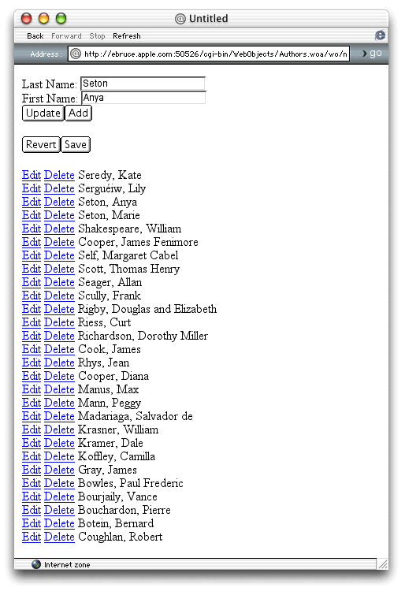

| PATH |

In this section you'll create an application to edit the AUTHOR table of the Books database. The table stores the first and last names of book authors. Your application provides facilities for adding, editing, and deleting authors.
The AUTHORS table contains three columns: FIRST_NAME, LAST_NAME, and, AUTHOR_ID. The AUTHOR_ID column serves as the table's primary key, and it's not shown in the application's user interface. You don't even need to worry about updating the value of that column; Enterprise Objects does it for you.
The first step is to create the Authors database. You'll user OpenBase Manager to create it.
The OpenBase Manager application is located in the /Applications/OpenBase directory.
Authors in
the Database Name text field.![[image: ../Art/openbaseadddatabase.gif]](../Art/openbaseadddatabase.gif)
You now have an empty database called Authors.
EOModeler is the tool you use to model your data. In it you define the entities that serve as the interface between your code and the database. In this section, you'll use EOModeler to add a table to the Authors database.
The
EOModeler application is located in the /Developer/Applications directory.
With the JDBC adaptor provided with your WebObjects installation, you can communicate with any database that includes a JDBC driver.
Select JDBC from the list and click Next.
Your model includes the information necessary to connect to your database. The JDBC Connection dialog is where you enter that information. For this exercise, you only need to specify the URL used to connect to the database.
Enter jdbc:openbase://localhost/Authors in
the URL text field and click OK.
This pane is where you tell EOModeler how to configure the model entities from an existing database. Because you are creating a new database, none of these options needs to be selected.
Deselect all the options and click Finish.
In this section you'll add an entity called Author to the new model. This entity maps to the AUTHOR table that EOModeler generates from the entity's properties.
Choose Property > Add Entity.
Choose Tools > Inspector.
The Entity Inspector appears. It allows you to enter a variety of information pertaining to the new entity.
AUTHOR in
the Table Name text field.Author in
the Class text field.The Author entity
has two significant attributes: firstName and lastName.
An additional attribute, authorId,
serves as the entity's primary key.
firstName.FIRST_NAME as
the column name.char in the
External Type text field.30 in the
External Width text field.lastName attribute.Now, you'll add the attribute that serves as the primary key.
authorId.AUTHOR_ID as
the column name.int in the
External Type text field.authorId row
of the Author Attributes list, click in the column with a key as its
heading so that a key appears in the row.authorId row
so that the diamond disappears.The authorId attribute
is nothing more than a database artifact, required to make sure
that rows in the AUTHOR table are unique; it has no meaning to you
or the application's users. The diamond icon indicates that an
attribute is a property that is made available to an application's
custom logic and, if necessary, the application's user. Because authorId provides
no additional information about an author, it is not required for
the application's normal operation.
Figure 10-1 Authors model with Authors entity
Save the model and name it Authors.
The left pane of EOModeler's main window lists the entities present in the model. If you click an entity, details about its attributes are displayed in the right pane.
In Figure 10-1, you see the Author entity and the definitions of each of its attributes. The values of the columns indicate the properties of each attribute.
By default, the most commonly used columns are enabled in this view. To enable other columns, use the Add Column menu in the bottom frame of the window. These are the available columns and their meanings:
authorId is
a primary key.authorId attribute)
are not.null value.The External Type attribute must be one of the types defined by the JDBC adaptor. These are the most common ones:
blobchardate, datetimedoubleintlongNow that you have created the Author entity, it is time to create the AUTHOR table behind it.
In this section you'll create the Authors application. The application allows its users to add, edit, and remove authors from the Authors database.
This section introduces the use of enterprise object classes
(custom Java classes derived from entities defined in a model to
access database information) and the methods used to add objects
into the data store (adding rows to the AUTHOR table in the Authors database).
You'll use EOModeler to create the Author.java class.
After adding it to your project, you'll be able to create Author
objects in your code. You'll then add those objects to the data
store.
Follow these steps to create the Authors application:
Authors.eomodeld file
you created in "Creating the Authors Model" and click Open.![[image: ../Art/authorsaddmodel.gif]](../Art/authorsaddmodel.gif)
The entire application's functionality is provided by the
Main component. It includes an authorList array
where the authors are maintained while the application runs. When
the users clicks Save, the changes made to authorList are
saved to the database. Main.wo includes
elements to edit an author's information and actions to add, edit,
update, and delete authors. A WORepetition shows all the contents
of authorList.
After following these steps, Main.wo should
look like Figure 10-2.
Main.wo in
WebObjects Builder.author,
set its type as EOGenericRecord, and do not include accessor methods.authorItem,
set its type as EOGenericRecord, and do not include accessor methodsauthorList,
choose "Mutable array of" and EOGenericRecord for its type,
and do not include accessor methods.null,
which tells WebObjects to return the current page, Main, instead
of a new one (the same instance of Main persists throughout the application's
operation):addAuthordeleteAuthoreditAuthorrevertChangessaveChangesupdateAuthortrue for
the multipleSubmit attribute.Last
Name: ", follow it with a WOTextField, and press
Shift-Enter.value attribute
to author.lastName.Note: Since author, authorItem,
and authorList are EOGenericRecords,
WebObjects Builder does not know what their properties are. You
must type the keypaths for them manually. |
First Name: ",
follow it with a WOTextField, and press Shift-Enter.value attribute
to author.firstName.Enter "Update" for
the first WOSubmitButton's value attribute
(include the quotation marks), and bind its action attribute
to the updateAuthor action.
Enter "Add" for
the second WOSubmitButton's value attribute,
and bind its action attribute
to the addAuthor action.
multipleSubmit attribute
to true. "Revert" for
its value attribute, and bind its action attribute to revertChanges."Save" for
its value attribute,
and bind its action attribute
to saveChanges.Enter Edit as
the first WOHyperlink's caption and bind its action attribute
to editAuthor.
Enter Delete as
the second WOHyperlink's caption and bind its action attribute
to deleteAuthor.
Bind the first WOString to authorItem.lastName and
the second to authorItem.firstName.
Put the cursor on the right of the second WOString and press Shift-Enter.
list attribute
to authorList, and its item attribute
to authorItem.Main.wo.Figure 10-2 Main.wo with elements to maintain author information
Now you'll edit Main.java to
add the application's custom logic.
private EOEditingContext editingContext; private EOClassDescription authorClassDescription; private EOFetchSpecification fetchSpec;
Several methods in the Main class require the use of the editing context, class description, and fetch specification. Having the class's constructor store these objects in instance variables reduces the lines of code required to implement those methods.
When the Main component is created, it needs to request and store the editing context and retrieve the authors stored in the database (the first time you run the application, there's nothing to retrieve).
Edit the constructor so that it looks like Listing 10-1.
Listing 10-1 The constructor in Main.java
public Main(WOContext context) {
super(context);
// build fetch specification
fetchSpec = new EOFetchSpecification("Author", null, null);
// get editing context
editingContext = session().defaultEditingContext();
// fetch
authorList = new NSMutableArray(editingContext.objectsWithFetchSpecification(fetchSpec));
// get Author class description
authorClassDescription = EOClassDescription.classDescriptionForEntityName("Author");
// create a new Author object (where form data is stored)
author = new EOGenericRecord(authorClassDescription);
}There are three parts to retrieving data from a database with WebObjects: the fetch specification, the editing context, and the fetch.
A fetch specification is defined in three parts—the entity to fetch, restrictions used to filter the fetched objects, and the order of the result. The last two are optional, but the first one must be provided when the fetch specification is created.
addAuthor method
to that it looks like Listing 10-2.Listing 10-2 The addAuthor method in Main.java
public WOComponent addAuthor() {
// add only if the author is not already in the list
if (! authorList.containsObject(author)) {
// add author to list
authorList.addObject(author);
// insert author into editing context
editingContext.insertObject(author);
// create a new author
author = new EOGenericRecord(authorClassDescription);
}
return null;
}Because
of Enterprise Objects's Java integration, inserting a new row
in your database is almost as simple as adding an item to an array.
Once your class is defined as a subclass of EOGenericRecord, all
you need to do is insert the object into an editing context; it
is then maintained in the object graph like other objects fetched
from the database. When the saveChanges method
is called, a new row is created in the database for each object
added to the editing context.
The addAuthor method
is invoked when the user clicks Add. If the user isn't editing
an existing author, it inserts the Author object that the user edited
(through the first form's text fields) into authorList,
and inserts it in the object graph maintained by the editing context
as well. It then creates a new Author object, where another author's
data can be stored. (Note that the new instance is added to the
object graph only if the user clicks Add again.)
deleteAuthor method
so that it looks like Listing 10-3.Listing 10-3 The deleteAuthor method in Main.java
public WOComponent deleteAuthor() {
// remove author from authorList
authorList.removeObject(authorItem);
// get object's editing context
EOEditingContext ec = authorItem.editingContext();
// remove author from object graph
ec.deleteObject(authorItem);
return null;
}In
multiuser applications an object can be in a different editing context
than the default one. When you need to delete an enterprise object
from a data store, you should ask the object itself for its editing
context. Then you invoke that editing context's deleteObject method.
editAuthor method
so that it looks like Listing 10-4.Listing 10-4 The editAuthor method in Main.java
public WOComponent editAuthor() {
// set the author to edit to the one the user selected
author = authorItem;
return null;
}When
the user clicks Edit, authorItem contains
the author object to be edited. The next time the page is drawn,
the text fields are populated with the information for the selected
author.
updateAuthor method
so that it looks like Listing 10-5.Listing 10-5 The updateAuthor method in Main.java
public WOComponent updateAuthor() {
// create a new author
author = new EOGenericRecord(authorClassDescription);
return null;
}When the user clicks Update, the Author object she edited gets updated with the values entered in the form's text fields (the object is already in the list). Therefore, the only thing this method needs to do is create a new Author object. The next time the page is drawn, the text fields are populated with nothing (because they get their data from the new, empty Author object), enabling the user to enter the information for a new author.
saveChanges method
so that it looks like Listing 10-6.Listing 10-6 The saveChanges method in Main.java
public WOComponent saveChanges() {
// save changes made in editing context to object store
editingContext.saveChanges();
return null;
}revertChanges method
so that it looks like Listing 10-7.Listing 10-7 The revertChanges method in Main.java
public WOComponent revertChanges() {
// revert changes made in editing context
editingContext.revert();
// re-fetch
authorList = new NSMutableArray(editingContext.objectsWithFetchSpecification(fetchSpec));
return null;
}When
the user clicks Revert, the revertChanges method
tells the editing context to discard any changes made since the
enterprise objects in it were last fetched or saved. However, the authorList array
isn't tied to the editing context in any way. Therefore, you must
retrieve a new list of authors from the object store and assign
it to authorList, so
that the user sees up-to-date information. (The previous list is
garbage-collected by the Java runtime after it is no longer referenced
by variables in your application.)
Main.java.Figure 10-3 shows the Authors application after the names of some authors have been entered.
Figure 10-3 The Authors application
There is only one instance of Main throughout the application's
execution (all the actions return null).
When Main is created, it reads the authors from the database and
stores them in the authorList instance
variable. As the user makes changes, authorList (and
its editing context) is updated. The WORepetition element displays
the contents of authorList and links
so that the user can edit or delete a particular author. Changes
are saved when the user clicks Save.
Notice that all the complexities normally required when dealing with databases have been replaced with the straightforward use of enterprise objects.
It is frequently convenient to browse the raw data in a database, including attributes that may not be displayed by your WebObjects components. EOModeler has the ability to browse tables and perform basic filtering, which is useful during application development. This simple facility lets you get a "behind the scenes" look at your data.
Figure 10-4 EOModeler's Data Browser
Current database data is displayed. The Refetch button allows you to refresh this data on demand.
EOModeler also lets you perform simple filters to limit the number of rows displayed as Figure 10-5 shows.
Figure 10-5 Data Browser using filter
© 2001 Apple Computer, Inc.